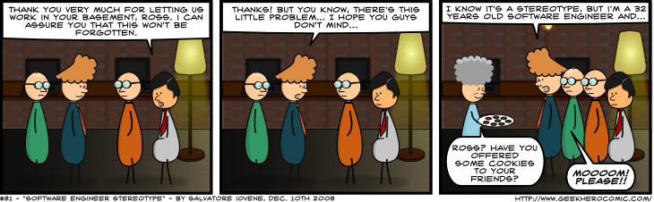

Week 6 Cultural Blog - Stereotype Threat

I'm white, nerdy, and an introvert. I'll let that sink in for a moment. I'm white, nerdy, and an introvert. Can you think of some characteristics for these things that I identify as? I know I can and no I don't dress up like a character from Star Wars or Star Trek and attend conventions on the weekends. I don't live in my mother's basement. But I am working towards being a software engineer though so you got me there.
Stereotype Threat is the threat of being viewed through the lens of a negative stereotype or the fear of doing something that would inadvertently confirm that stereotype.
Claude M. Steele, a leading researcher into Stereotype threat has done numerous tests and experiments into the subject. Dr. Steele talks at length in the linked lecture below, that we tend to under perform in situations where stereotype threat is present.
In one of his experiments, Dr. Steele describes giving a very complex math test to the students at the University of Michigan that were in the Engineering and Math departments. When the test was administered with no attempt to lift the stereotype that women were poor at math, the women inevitably did much worse than their male counterparts. But when an effort was taken before the test to tell the students that on average, male and female students did the same, the women excelled and far out scored their male counterparts.
Through out my life I've considered myself an introvert. I don't dislike people and I most certainly do NOT think I'm better than others but I need my private time to recharge my batteries. I remember in college hearing people make remarks about my absence from parties and social gatherings, noting that I thought I was better than everyone else or that I hated this person or that person.
I also remember being confronted at one such social gathering by someone that thought I hated them because I came to this party but not theirs. I'm not a confrontational person and the ordeal only served to make me never want to attend another social gathering ever again.
The pressure to fit in and to be social only made me more awkward in those situations and I can see now, having read Dr. Steele's work, that I was under performing because I was trying to hard to avoid the stereo type or the confrontation that might come from the stereo type.
Dr. Steele goes on to talk about how participants in his experiments almost always noted that they did not consider themselves in a stereotype threat situation. As if they were denying the situation of the problem.
He also noted that the physiological data collected from each participant always showed elevated blood pressure, heart rate, quickened breathing, and activation of the parts of the brain that are reserved for dealing with threat rather than for reasoning and thinking.
Watching the above video, I was also struck when he pointed out that the participants with the strongest responses where those that had the most desire to succeed in the area that the experiment was conducted in. The women math students in Michigan that had dedicated their lives to math and loved it almost always had the strongest response and under performance.
I can see these traits in myself. I love computers and software engineering. I want so badly to be a professional software engineer. I can't help but wonder if I don't sabotage myself because of the stereotypes that I place on my introvert personality.
I was feeling very down after watching Dr Steele discuss stereotype threat but then he got the part about lifting the threat.
I especially like the part where he discusses his college professor that took interest in him and constantly made him feel like he had the ability and talent to succeed. This one little thing helped to lesson the effects of the many stereotype threat cues that he encountered as a young African American man in college.
Seeing the possibilities in someone is not always the easiest thing but the impact we can have on other people when we tell them that they are capable and have talent is great indeed. Often the factor that breaks down stereotypes is the ability to communicate with one another and in re-enforce the positive and the abilities in others. I appreciate Dr. Steele's work and I'm glad I've had a chance to study it. I would highly recommend you take the time to at least watch the linked video above. I've also linked a few more resources below for further studio.
Resources